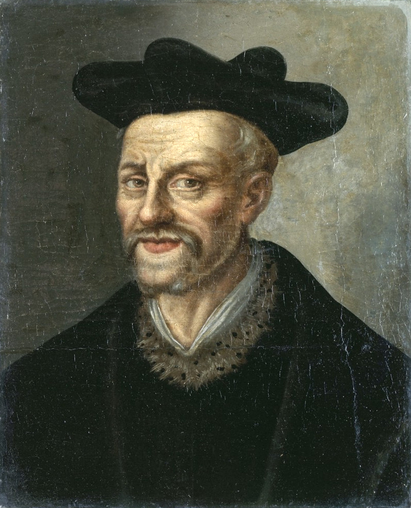

Sandbox · Who Was Rabelais? · Letterpress
Letterpress Reusable bio-slide treatment

Anonymous, 16th c. · Palace of Versailles
Public domain ·
Wikimedia Commons
c. 1483/1494 – 1553 · French Renaissance humanist, physician, and satirist
Book 2, Chapter 30 of Pantagruel sends the scholar Epistemon on a brief tour of Hades, where the great men of antiquity have been reduced to menial trades. The chapter is the data source for everything that follows.